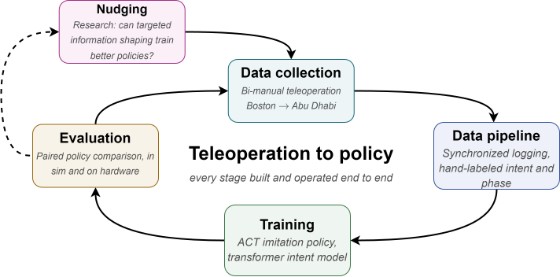
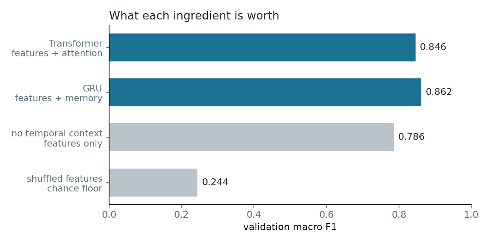
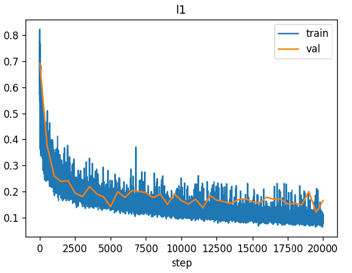
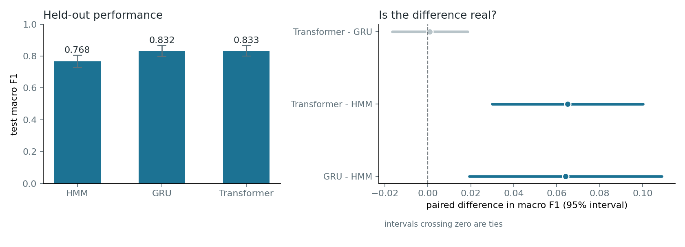
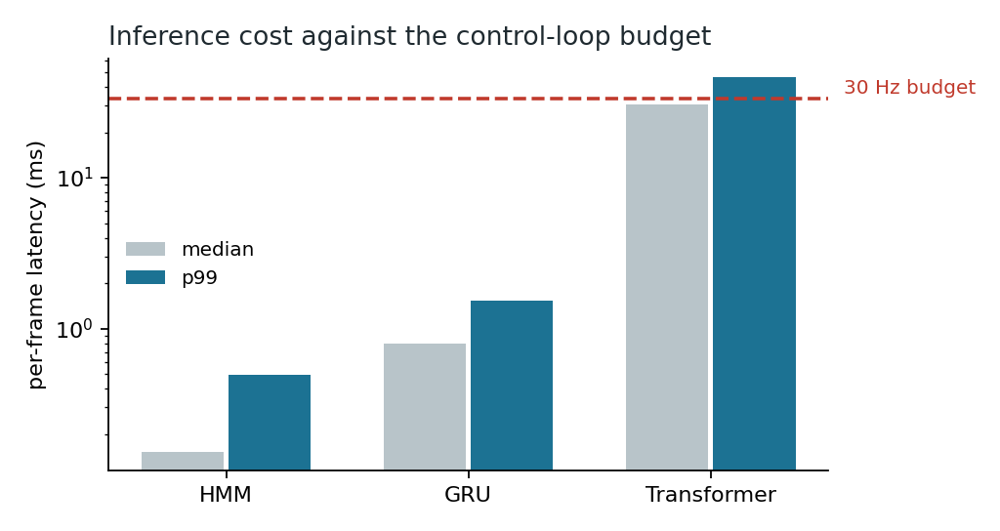
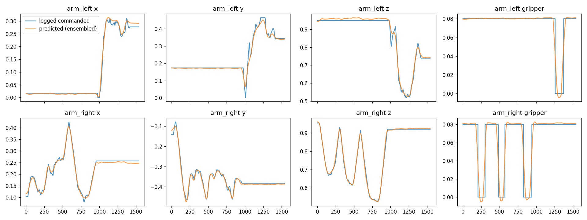
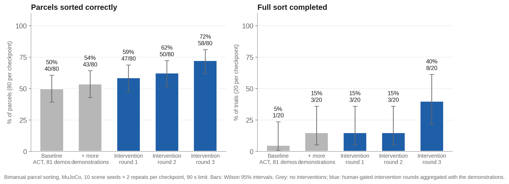
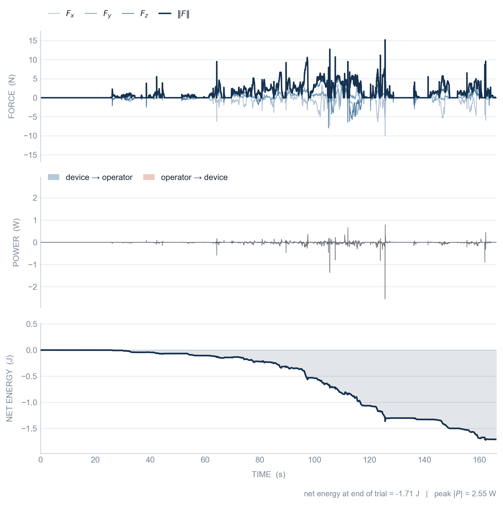

Franka arms and a pan-tilt head in Abu Dhabi, driven from a VR headset in Boston over the public internet. Bimanual in simulation, hardware runs on the Abu Dhabi cell, one control stack for both. This page is the long version; the front page has the short one.
Controllers, safety filter, motion generation and the simulation backend are mine, in C++ directly against libfranka. The same binary drives a simulated arm and a real one; the backend is a build flag.

Each arm runs Cartesian impedance in a 1 kHz torque loop: a stiffness–damping wrench on the pose error, mapped through the Jacobian transpose, Coriolis compensated. Impedance rather than joint tracking because it needs no precomputed trajectory, and because compliance is what keeps contact stable when the operator's input is not.
A seven-joint arm has a spare degree of freedom, so posture is regulated in the nullspace of the task — built from the inertia-weighted pseudoinverse rather than the plain one, which is what lets the elbow settle without moving the hand.
Damped least squares near singularities; joint-limit avoidance, velocity damping and torque saturation underneath, so a command the arm cannot follow is bounded rather than refused.
Someone driving two arms can only watch one of them, so the arms have to stay out of each other's way without being asked and without feeling like they are fighting the person.
A control-barrier-function filter sits between the commanded Cartesian velocity and the executed one, with a margin that grows with closing speed — the arms may come together slowly but not quickly. When a command would breach it, the filter solves a one-constraint QP in closed form and, because radial motion is penalised more than tangential, the correction slides the arm around its neighbour rather than stopping it dead.
Each arm runs a constant-velocity Kalman filter on the other's end-effector, so the margin tracks where the other arm is going, not where it was — and widens when that estimate is least certain.
Between the operator's pose command and the controller sits a motion generator: resolved-rate IK with damped least squares, soft posture regularisation, per-joint velocity and acceleration caps, and a braking horizon that decelerates a joint before its limit instead of clipping at it. Linear, trapezoidal and minimum-jerk profiles in joint and Cartesian space are what homing and recovery run on.
The pan-tilt head follows the headset under joint impedance with torque rate limiting, so a fast head turn produces a fast look rather than a jolt.
Every device — each arm, the head, each gripper — runs its own 200 Hz state machine across nine states from idle through fault to recovering, coordinated by an avatar-level machine above them. A device that faults is detached and the rest keep running.
Local machines keep authority to refuse an unsafe transition, so no single stale packet or upstream fault can produce motion.
The MuJoCo backend mirrors the libfranka state space exactly, so the control and networking code does not know which one it is talking to — the backend is a build flag. Scenes, gains, workspace limits and device layout are YAML, assembled into a model at startup, so adding an arm is a config change rather than a rebuild.
Hand to robot motion ≈ 200 ms cross-continental: 8 ms hand sampling, < 1 ms send, ≈ 97 ms one way on the link, 52 ms in the controller. Velocity feedforward cut the controller's kd/kp lag by 44 ms (predicted 45). Photon to eye, measured with a photodiode on the headset panel: 183 ms median, local loopback.
With no force feedback, the delayed video is the only thing telling the operator what the arm is doing. Two answers: a ghost gripper that shows the command ahead of the image, and a local twin of the robot that runs the same controller at zero latency.
Because the MuJoCo and libfranka backends are interchangeable behind the abstraction layer above, a second instance of the identical control stack runs locally on a simulated plant. The command stream is teed before it reaches the network, so the twin sees every command at the moment the operator issues it and the hardware sees it one forward delay later. The operator watches the twin. It responds at zero latency and leads the hardware by exactly the time the packet spends in flight.
A reconciler thread compares delayed telemetry against a ring buffer of past twin states at matched phase, replays the buffered commands forward to the present, and returns a filtered correction through a mailbox applied at the next tick boundary — so a correction never lands mid-step.
The obvious way to hide delay is to predict measured state forward. That is also the way to make it unstable, because it forecasts a signal the operator does not control.
This does not forecast. The command is known locally before the network sees it, so the lead is not a prediction — it is the tee. The twin renders a consequence the operator has already caused.
The twin currently predicts the arm, not what the arm touches. Contact is the stage that makes this model-mediated control in full.
Matching phase and replaying forward is what keeps two clocks agreeing. It has to exist before any environment model can be plugged in above it.
Whether this produces better demonstrations, rather than a more comfortable operator, is open. It needs the same paired design as the nudging study to answer honestly.
Demonstrations are collected through the interface, curated into a labelled dataset, used to train a policy, and that policy is deployed back onto the hardware the data came from — the arms and controllers above. The four sections that follow walk the loop in that order, and a fifth asks the question the whole thing was built to answer. Owning every stage is what makes that question measurable at all: the same episodes pass through all of them without a translation step in between.

Driving two arms occupies both hands, so the interface cannot ask for them. Menus are selected by gaze or by voice; the wrist-camera picture-in-picture enlarges when the operator looks at it and shrinks when they look away. The layout responds to what the operator is attending to and what the task currently needs, rather than to a controller button.
The controls are deliberately skeuomorphic — switches that look like switches, gauges that read like gauges, a stop button shaped like one. Someone wearing a headset for a two-hour collection session should not have to learn an abstraction first, and the measure of this interface is how little of it has to be explained before it is usable.
Frames are read from shared memory — from the camera, or from MuJoCo, through the same buffer. Left and right images are packed side by side into a single frame before encoding, so one stream carries both eyes and is inherently synchronised. A 64-bit wall-clock timestamp is embedded in an extra image row, and with both machines disciplined to NTP the receiver measures true one-way delay at decode time rather than assuming half the round trip. Encoding is GStreamer H.264 at ultra-low-latency settings, streamed as RTP over UDP with ULP-FEC redundancy, across a ZeroTier link.

On the public internet, packet loss and jitter are operating conditions rather than failures. The sender runs a three-state quality controller off the receiver's feedback: at five per cent loss it drops to half bitrate, two thirds frame rate and double FEC; at fifteen per cent loss or fifty milliseconds of jitter it halves again and falls back to a quarter of the pixels.
The asymmetry is deliberate: three consecutive bad reports to step down, five good ones to step back up, and separate thresholds for degrading and recovering. Without that hysteresis a loss rate sitting near a boundary makes the stream flap, and the operator sees quality oscillate instead of settle.
Depth perception matters for grasping, so the operator normally gets a true stereo pair, rendered in stereo in the headset. Packing both eyes into one encoded frame rather than sending two streams costs horizontal resolution per eye and buys synchronisation for free — there is nothing to align, because there is only one frame.
A mono source runs the identical path. The pipeline does not care how many cameras are upstream of it.
At the end of every episode the operator marks it success, partial, or failure, and the per-frame signals that support labelling are written as the episode runs. Nothing is reconstructed in post. Failed episodes are kept and marked rather than quietly dropped, because a dataset that only contains successes cannot tell you what failure looks like.
Every episode carries its outcome and the full synchronised stream set — both wrist cameras, the head view, end-effector pose and command, contact force, gripper state, and gaze — plus a per-frame attention estimate: a Bayesian filter running over gaze that maintains a probability distribution across the objects in the scene.
Worth being exact about, because the distinction matters later: what this dataset records is attention, not intent. Attention is measured. Intent is inferred, and the model that infers it was trained on this data afterwards — so no episode in the current set was labelled by it. Sessions recorded from here on carry its live output as well.
The operator also sees a running episode count and session time. A small thing, and it exists because collecting a few hundred demonstrations is a session you pace rather than a task you complete.
A hundred and twenty episodes is not a foundation-model corpus and is not presented as one. It is a curated set with known provenance, documented failures, and labels produced at collection time rather than reconstructed afterwards — which is the property the research below depends on.
The collection tooling is the reusable part. Running the task again, or a different task, is a config change and another session, not another pipeline.
Scene generation is a separate service the robot asks for a fresh episode. It samples object positions under minimum-separation constraints against each other and against the bins, then yaw over the full circle and scale within ten per cent; it repositions the key light, and varies its intensity and colour temperature; it picks unimanual or bimanual. Every draw comes from one seed that is logged with the episode, so any episode can be regenerated exactly.
This is domain randomisation over what a camera actually sees, and it is why the policy is not keyed to one lighting rig or one parcel position. It is not a sim-to-real claim: the appearance gap between this renderer and the real cell is not something randomising light colour closes on its own.
Two separate things are trained on this dataset and they answer different questions. Each is treated on its own below, and every result in this section belongs to exactly one of them.
Predicts which object or bin the operator is acting toward, and which phase they are in: idle, approach, grasp, transport, place. Causally, one frame at a time, so the rest of the system can react while the action is still happening rather than after it. The representation is deliberately task-agnostic, so it carries across sorting, stacking, and assembly.
Three model families sit behind one interface and consume identical features — a structured HMM, a GRU, and a causal transformer — so any difference in score is attributable to the model rather than to its inputs.
Reported as macro F1, not accuracy: idle is more than half of all frames, and a model that has learned nothing still reaches sixty per cent frame accuracy here.

Features alone carry almost all of it: 0.244 at the chance floor to 0.786 with no temporal context at all. Adding memory buys another 0.076. Adding attention buys nothing, and tripling capacity makes it worse.
Three unrelated mechanisms — a Bayesian filter, a recurrent state reset every frame, and attention restricted to a single frame — land within 0.011 of each other around 0.78. That number is a property of the data, not of any model.
Before the transformer was written, segment-duration statistics put phase lengths at 57 to 137 frames, and a boundary analysis showed the residual errors were segment extent rather than missed segments. Both said the task is short-horizon. The transformer was then given a 1023-frame receptive field — about 34 seconds, roughly two full pick-and-place cycles, deliberately more reach than the measured dependency length — and gained nothing.
Stating the prediction before running the experiment is what makes the negative result worth reporting.
An action-chunking transformer (ACT) trained on the collected sorting demonstrations, then run closed-loop in simulation through the same impedance controllers the operator was driving. This is the step that turns the pipeline from data infrastructure into a working autonomous skill, and it is what makes "did the demonstrations get better" a measurable question rather than a rhetorical one.
Both wrist cameras and the head view go in; fourteen dimensions of joint command for both arms and grippers come out, predicted as a chunk rather than a single step, with overlapping chunks combined by temporal ensembling at execution time. Nothing privileged is fed to the policy — it sees the same images and proprioception the operator's own loop produced.

Training and validation track together with no divergence, so the policy is not memorising the demonstration set. That is the only thing a loss curve can tell you.
Whether it can actually sort parcels is a separate measurement, made by running it on the arms — that is in Evaluate, below.
ACT after Zhao et al., Learning Fine-Grained Bimanual Manipulation with Low-Cost Hardware, RSS 2023.
Simulation and hardware are not interchangeable, so every row below carries the conditions it was measured under.

| Model | Params | Test macro F1 |
|---|---|---|
| HMM + duration model | — | 0.768 |
| GRU | 28.5k | 0.832 |
| Transformer | 28.8k | 0.833 |
Both learned models beat the structured baseline by about 0.065 with a 95% interval clear of zero. Against each other: +0.001, interval [−0.017, +0.018].

The module runs inside a 30 Hz loop. The GRU's per-frame work is constant; the transformer re-encodes its whole context buffer every frame and costs roughly an order of magnitude more, with its p99 over budget.
So the GRU ships — and it is not the model that scored highest on validation. In a real-time system, inference rate is part of whether a model works at all, not an implementation detail discovered afterwards.


Plain behaviour cloning stalled a few centimetres from the grasp. Three rounds of human-gated corrections through the same VR interface took the policy from 50 to 72 % of parcels sorted and from 1 to 8 of 20 full sorts, while the operator's share of rollout time fell from 31 to 14 %.
| Result | Where | Value |
|---|---|---|
| Intent and phase macro F1, GRU | Replay | 0.832 |
| Intent inference, GRU p99 | Hardware | 1.5 ms |
| ACT open-loop replay MAE | Replay | 0.0385 |
| Parcels sorted, ACT + 3 DAgger rounds | Sim | 72 % |
| Full sorts, ACT + 3 DAgger rounds | Sim | 8 / 20 |
| Sorting success, hardware | Pending | — |
| Nudged vs. unnudged policy | Pending | — |
The intent models are evaluated on replayed episodes; their behaviour inside a live loop is not yet measured. The policy has not been run closed-loop on hardware. The paired policy comparison — the result the research question turns on — is in design.
Updated October 2026.
Shaping what the operator sees changes how they work. The open question is whether it changes what their demonstrations can teach.
A ten-participant study across two tasks — gearbox assembly and tight-clearance tactile insertion — compared six feedback conditions, from fully manual to combined informational and dynamic assistance. Roughly three hundred trials, randomised order with no condition repeating back to back, NASA-TLX after every trial, contact forces and torques logged from the robot.
Assistance cut perceived workload sharply and reduced peak contact forces without costing completion time. The finding worth arguing about: combining informational and dynamic assistance was not better than either channel alone. More help is not monotonically better.
| Insertion task | Time | TLX |
|---|---|---|
| Manual | 160.9 s | 70.3 |
| Pure information | 161.2 s | 26.9 |
| Pure dynamic | 158.4 s | 27.7 |
Mode-wise means over per-participant averages. Workload falls by more than forty points while completion time does not move — in a precision-limited task, difficulty is not about speed.
Better operators are not the point. Better data is. The current system predicts operator intent in real time — target object, arm, destination, phase — and uses that prediction to shape what the operator sees, so the demonstrations they produce are cleaner and more consistent.
The test is a paired comparison: two policies with identical architecture and training budget, one trained on nudge-assisted demonstrations and one on unassisted, evaluated on task success. That reframes a noisy human-factors question as a single number a robot-learning team already cares about.
The interface and the intent model are running. The comparison has not been run yet — the Evaluate table above says so.
Using the same signal to predict and to define ground truth would invalidate the result.
No privileged simulator state, so nothing works in sim that cannot work on hardware.
A deterministic baseline first, and a larger model only where the simpler one demonstrably fails.
The current system is not the only one I have built. The MSc thesis ran on a different machine entirely — a single arm with a pan-tilt head, a Sigma 7 haptic device, and ten real participants in the loop. Alongside it sits a set of control and perception projects from Boston University that have nothing to do with teleoperation.

The operator held a Sigma 7 running Cartesian impedance and passivity-based guidance-force rendering in a 1 kHz loop. Rendering assistance as force rather than as an image is what let the study compare an informational channel against a dynamic one at all — but a device that pushes back on a human is a device that can push a human-in-the-loop system unstable. Passivity is the constraint that rules that out: if the operator–device port never generates energy, the coupled system cannot be destabilised by the feedback, whatever the operator does.
The bottom panel is the proof, per trial. The cumulative energy never rises. It falls in steps that line up exactly with the contact bursts in the top panel, ending at −1.71 J with a peak instantaneous power of 2.55 W. Over the whole trial the port only ever dissipates. That is a property you can check on any log, which is why every trial logs it.
A revised version of this controller followed the study and is maintained as its own project, independent of the system it originally served.
Force-domain diffusion policies for sub-millimetre insertion, where the learned policy ends up beating the scripted expert that generated its training data. Vision-based pushing control with an EKF and chance-constrained NMPC, where telling the controller about its own uncertainty turned out to cost more than it bought. And a MuJoCo simulation layer built once and pulled in as a dependency by the rest.
Ten participants, six feedback conditions, three hundred trials on a physical avatar.
Force-domain diffusion policies, vision-based NMPC, underactuated control.
Four years on an electric race car, two as technical director.
Battery packs, then motor design, then motor control, then robot control. The hardware kept changing and the problem did not: make something physical behave, reliably, at rate, when the inputs are imperfect.